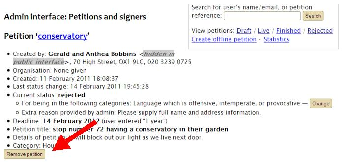
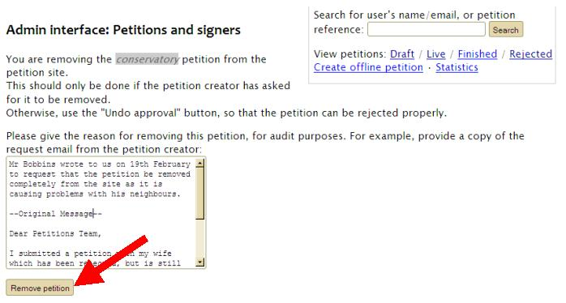
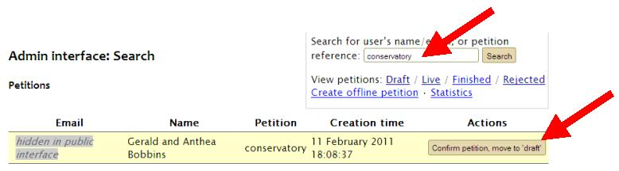

To remove a petition
Petitions should only be removed in extreme circumstances, usually at the request of the petition creator. Removing a petition removes all trace of it from the public website. In most instances, the best procedure for council transparency is to reject the petition and hide information from public view as necessary.
To remove a petition click the ‘Remove petition’ button on the petition’s admin page:
You can also find a ‘Remove’ button under ‘Actions’ on the Draft/Live/Finished/Rejected list (whichever is relevant for the petition in question), unless the petition has had a response sent to it; in that case you can find it only on the petition’s admin page.
Clicking either button will take you through to the same page, where you will be asked to give a reason why the petition is being removed. Once you have noted the reason, click the ‘Remove petition’ button:
The petition will be removed completely from the public website, but will still be available in the admin interface.
The only way of finding a removed petition in the admin interface is to search for it, using either the petition’s short name or the name/email address of the petition creator. It will no longer be listed under any of the statuses, including Finished and Rejected.
If you remove a petition by accident you should search for it, click the ‘Confirm petition, move to draft’ button, and then either approve or reject it as appropriate:
